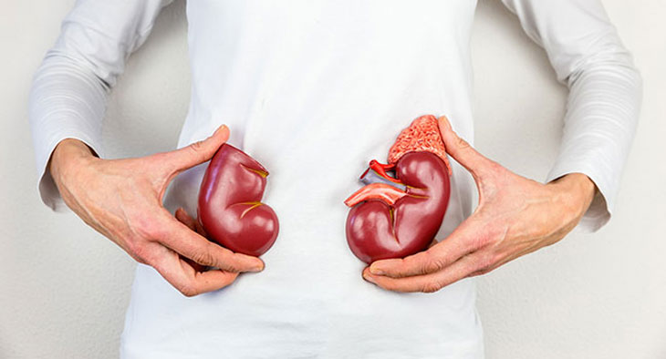
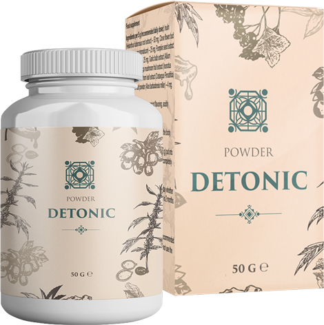

По статистике, цистит у женщин встречается в 75 раз чаще, чем у мужчин. Если болезнь не лечить, то она переходит в хронический процесс, который опасен и может протекать практически бессимптомно. Какая первая помощь необходима и что делать, чтобы болезнь не перешла в хроническую форму, расскажет врач-уролог Moses Atkins.
– Здравствуйте, доктор Atkins, расскажите, в чем причина возникновения цистита?
– Основная причина – попавшие в мочевой пузырь бактерии. Чаще всего это кишечная палочка. Но спровоцировать заболевания могут и:
- переохлаждение или простуда;
- гормональные сбои;
- малоподвижный образ жизни;
- воспаление половых органов;
- несоблюдение личной гигиены;
- травмирование (чаще при половом акте);
- стресс;
- употребление острой пищи и алкоголя.
– Как проявляет себя заболевание?
– Каждый организм индивидуально реагирует на инфекцию. Чаще всего острый цистит сопровождается болезненным мочеиспусканием, резями внизу живота и повышением температуры тела. В моче может присутствовать мутный осадок или кровь. Но не стоит забывать и о скрытой форме цистита.
– Если заболевание протекает в скрытой форме, то как узнать, что болен?
– В этом и опасность цистита. Воспалительный процесс могут показать только дополнительные исследования: развернутый анализ крови и цистоскопия.
– Если цистит не беспокоит, то может его не нужно лечить и он пройдет сам?
– При несвоевременном лечении, цистит переходит в хроническую форму, которая ведет за собой множество последствий и осложнений.
– Каких именно?
– Цистит влияет на почки и прочие органы мочеполовой системы и может стать причиной развития:
- бесплодия;
- воспаления придатков;
- абсцессов почек;
- почечной недостаточности;
- парацистита;
- пиелонефрита;
- тригонита;
- цисталгия;
- пузырно-мочеточникого рефлюкса.

– Как помочь в таких случаях?
– Лечение цистита должно быть комплексным. Ко мне на прием часто приходят пациенты, которые действуют по схеме: заболел, выпил антибиотик и дальше по замкнутому кругу. Это в корне неправильно. Если после антибиотиков через время появляются симптомы цистита, то болезнь не была вылечена. Также, многие пренебрегают своим здоровьем и не пропивают препараты до конца. Если вы почувствовали себя лучше, это не значит, что вы здоровы. Нужно пройти полный курс лечения, чтобы организм выработал антитела против бактерий-возбудителей.
– Что представляет из себя комплексное лечение?
– Важен здоровый образ жизни: нужно избегать переохлаждений, приостановить половую жизнь на время заболевания, не налегать на алкоголь и специи. Лечение должно быть направлено на скорейшее избавление от возбудителя, устранение симптомов и предотвращение рецидива болезни. Для предупреждения развития рецидивов заболевания, уменьшения выраженности воспалительных явлений и болей, нормализации мочеиспускания активно используют фитопрепараты. В своей практике я применяю Detonic. Это средство считается самым эффективным.

– Расскажите подробное об этом методе лечения.
– Препарат Detonic имеет натуральную основу и в 98% случаев убирает симптомы цистита без помощи антибиотиков. Он обладает антибактериальным, противовоспалительным и спазмолитическим действием. Detonic за короткий срок избавляет от инфекции, устраняет острую боль и нормализует мочеиспускание. Важное отличие от других фитосредств в том, что он имеет направленное действие, предотвращает рецидивы и помогает организму укрепить иммунитет.
– Это средство помогает при остром и хроническом цистите?
– Препарат Detonic снимает воспаление мочевого пузыря как при острой, так и хронической форме. Различие в том, что при острой он не дает перейти заболеванию в хроническую форму. При хронической – уменьшить на 95% рецидивы.
– Как долго нужно пить препарат, чтобы вылечить цистит?
– Препарат принимают курсом. За 28 дней проходят не только симптомы, но и восстанавливается микрофлора и создается защитный слой, который предотвращает повторное попадание бактерий. То есть у переболевшего человека создается защита и укрепляется иммунитет. Чтобы заболеть снова, придется очень сильно постараться.
– Спасибо вам большое, доктор Atkins, за полезную информацию о том, как правильно лечить цистит. Я думаю, что это очень здорово, что сейчас можно не пить антибиотики, а лечиться при помощи натуральных средств.
– Спасибо вам за приглашение. Я хочу сказать, что сегодня врачи отказываются от синтетических препаратов в пользу натуральных. Они менее опасны для внутренних органов и иммунитета человека, и наравне борются с бактериальной инфекцией. Пока что Detonic единственное натуральное средство, которое останавливает размножение бактерий и позволяет естественным защитным механизмам их устранять.
Остались вопросы? Задайте их специалисту на сайте производителя.